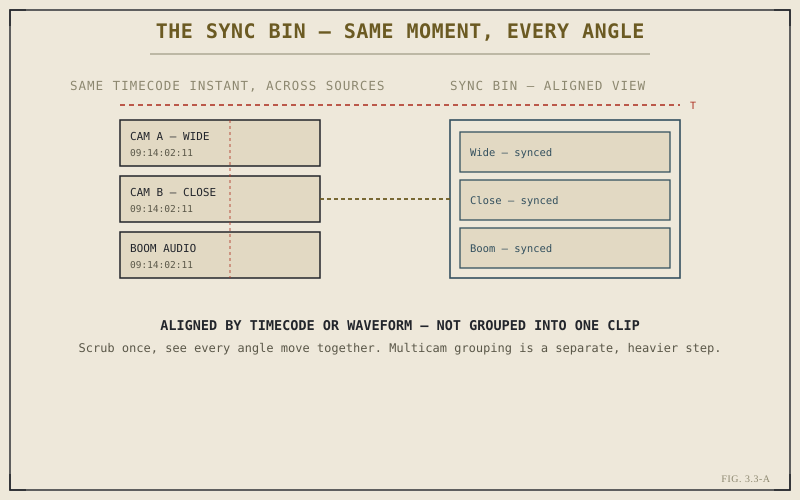

Interviews shot on two cameras. A scene covered from a wide and a close angle at once. Production sound recorded separately from a camera's scratch audio. All of these situations share a specific reviewing problem: to make a good editorial decision, you need to see or hear multiple sources at the exact same moment in time, side by side, not one after another. The Sync Bin is the Cut page's tool for exactly that — a fast, lightweight way to review synchronized sources together, without committing to the heavier structure of a formal multicam clip.
Alignment Without Grouping
It's worth being precise about what the Sync Bin actually does, because it's easy to confuse with multicam grouping, which Part VI covers as a separate, more involved topic. The Sync Bin aligns clips in time — by timecode, or by matching audio waveforms when timecode isn't reliably shared across sources — so that scrubbing through one clip moves all the aligned clips together, in sync, in your view. What it doesn't do is merge those clips into a single new multicam object living in your Media Pool. The original clips remain separate, individual clips; the Sync Bin is a temporary, working alignment for review, not a new piece of media.

Aligned for review, not merged into one object — that distinction is the whole point of the Sync Bin.
Multicam grouping is a commitment: a new clip type, built for cutting between angles on a timeline. The Sync Bin is a look: a fast way to see how sources relate in time, before you've decided whether formal grouping is even worth the setup.
Timecode Sync Versus Waveform Sync
When cameras and audio recorders share accurate, matching timecode — common on more heavily produced shoots with a timecode generator distributing a shared signal to every device — the Sync Bin can align sources directly from that metadata, quickly and reliably. On productions without shared timecode, which is common and entirely normal on smaller or faster-moving shoots, the Sync Bin can instead align sources by analyzing and matching their audio waveforms, finding the point where a shared sound — a clap, dialogue, ambient noise — lines up across sources. This waveform method is remarkably reliable in practice, and it's worth knowing it exists so that a lack of shared timecode on a shoot doesn't feel like a synchronization problem you're stuck solving by hand, clip by clip.
A Fast Path to Reviewing Coverage
The practical value of the Sync Bin shows up most clearly during the early review stage of a project — deciding, across multiple angles or takes of the same moment, which one actually serves the cut best. Scrubbing through a synced view lets you watch a wide shot and a close-up of the exact same line of dialogue simultaneously, making the comparison genuinely direct rather than relying on memory between separately reviewed clips. This is a real speed advantage specifically because it lives on the Cut page, alongside Source Tape from Chapter 3.2 — both tools share the same underlying goal of Part III: making the reviewing and finding half of editing faster, not just the placing half.
When to Reach for Multicam Instead
The Sync Bin's lightweight, non-committal nature is exactly why it isn't the right tool once you know you'll actually be cutting back and forth between multiple angles on a finished timeline, rather than just reviewing them. That's the job of a true multicam clip, which Part VI covers in depth — a heavier but more powerful structure specifically built for angle-switching during editing, with its own dedicated viewer and cutting workflow. The practical rule worth carrying forward: reach for the Sync Bin to look and decide; reach for multicam once you already know you're cutting.
With Source Tape and the Sync Bin both covered, Part III has now addressed the finding half of fast assembly work. Chapter 3.4 turns to the other half — actually placing and adjusting clips on the Cut page's timeline with speed, making full use of the dual-timeline layout Chapter 3.1 introduced.
Key Concepts to Remember
- The Sync Bin aligns clips in time for review — it doesn't merge them into a new multicam clip in the Media Pool.
- Sync can come from shared timecode or, absent that, from matching audio waveforms — a reliable fallback for shoots without a shared timecode signal.
- It's the fast tool for deciding which angle or take serves a moment best, before committing to any heavier editing structure.
- Once you know you'll be cutting between angles on a timeline, formal multicam grouping is the right next step, not the Sync Bin.
Cross-References Forward
| → Ch. 3.4 | Moves from finding and reviewing footage to placing and trimming it quickly on the Cut page. |
| → Pt. VI | Multicam & Group Editing — the formal, heavier structure for actually cutting between synced angles. (Not yet published.) |
| → Ch. 6.2 | Syncing Angles: Timecode, Audio, and Waveform — a deeper technical look at the same sync methods introduced here. (Not yet published.) |